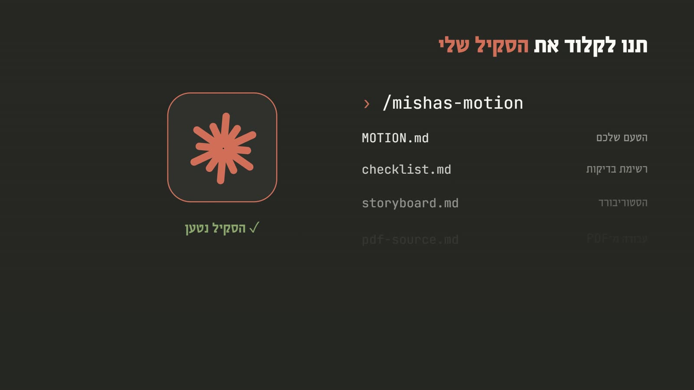
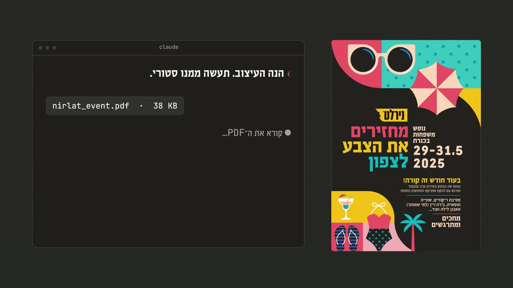
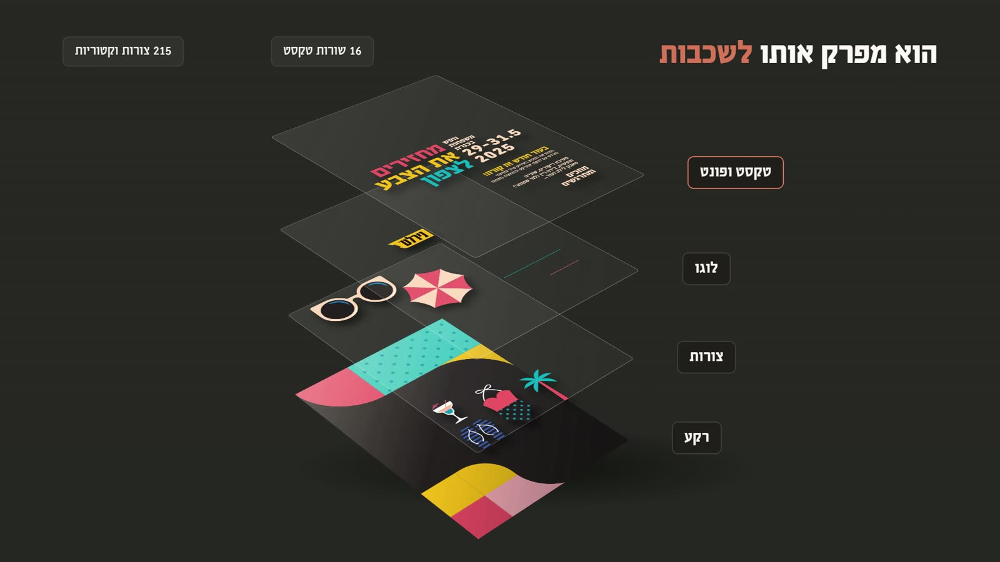
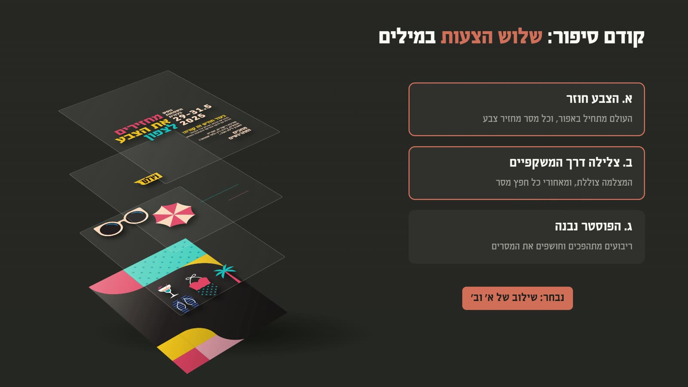
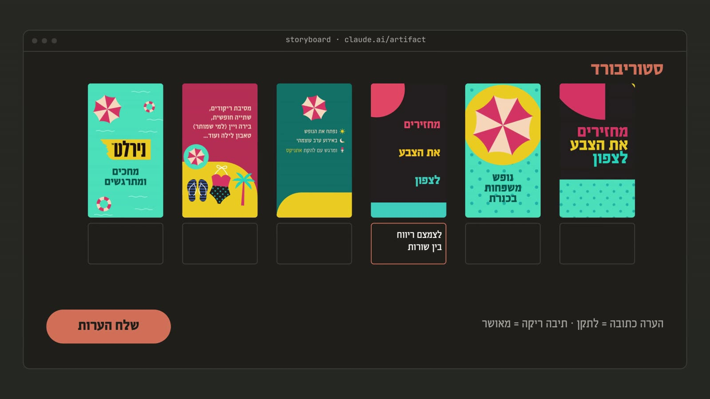
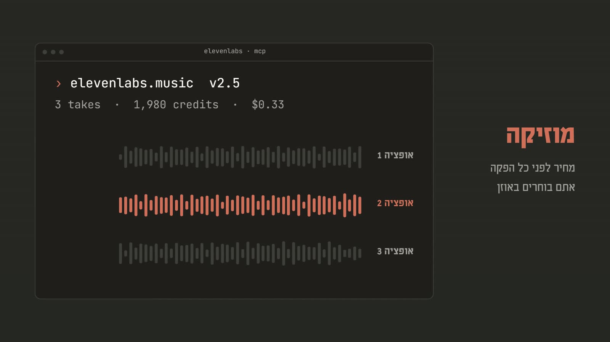
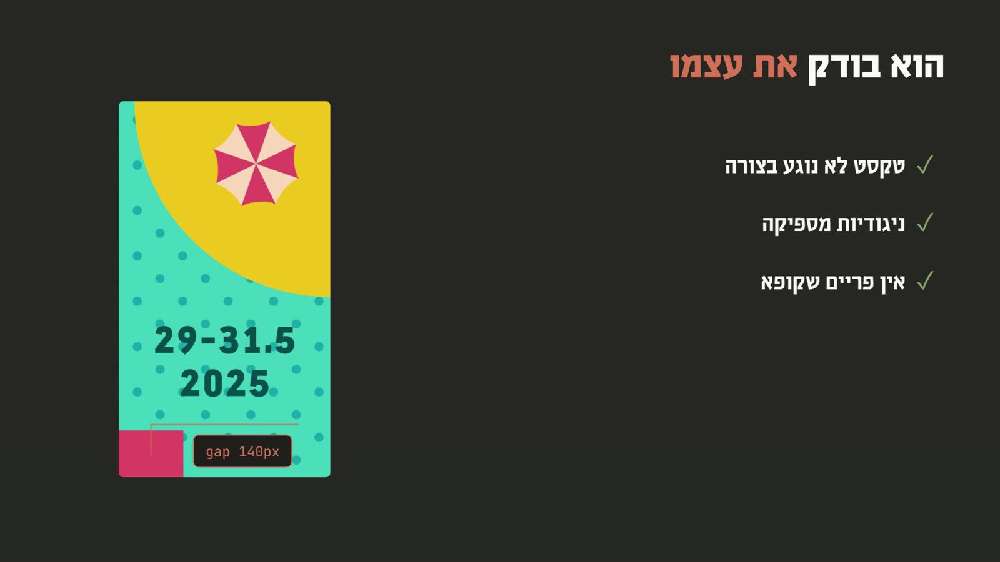

היום אתם יכולים לעשות אנימציות לבד. נותנים ל־Claude את הסקיל שלי, זורקים לו קובץ PDF של עיצוב, והוא מפרק אותו לשכבות, מציע סיפור, בונה סטוריבורד שאתם מאשרים, ומנפיש. בסרטון למטה רואים את כל הדרך. מתחתיו: הסקיל להורדה, קובץ לתרגול, וכל השלבים.
לא צריך לדעת לתכנת. Claude כותב את הקוד, מתקין את הכלים ומרנדר. אתם נותנים קובץ, בוחרים, ומעירים.
ב־Claude Code (מומלץ): פותחים את mishas-motion.skill כמו קובץ זיפ, ומעתיקים את התיקייה mishas-motion לתוך התיקייה ~/.claude/skills/
ב־Windows זו התיקייה הזו, כש־YOUR-NAME הוא שם המשתמש שלכם במחשב:C:\Users\YOUR-NAME\.claude\skills\
אפשר גם פשוט לגרור את הקובץ לשיחה ולבקש: "תתקין לי את הסקיל הזה". ב־claude.ai מעלים אותו בהגדרות, ביכולות, אבל רינדור וידאו עובד רק ב־Claude Code, כי שם Claude עובד על המחשב שלכם.

זה בדיוק מה שעשינו בתחילת הפרויקט: קובץ PDF אחד של פוסטר, בלי שום קובץ אחר, ובסוף סטורי מונפש עם מוזיקה וקריינות. הורידו את קובץ התרגול ונסו.
פותחים תיקייה חדשה ב־Claude Code, שמים בה את nirlat_event.pdf, וכותבים בקשה פשוטה. בלי מונחים טכניים: אומרים מה רוצים, באיזה גודל, ואיפה זה יעלה.
תשתמש בסקיל mishas-motion. הנה קובץ PDF של העיצוב. תעשה ממנו אנימציה בגודל סטורי (1080×1920). קודם תציע לי שלושה סיפורים במילים.

Claude קורא את ה־PDF ומוציא ממנו כל צורה, כל שורת טקסט והפונטים עצמם. בפוסטר של נירלט: 215 צורות ו־16 שורות טקסט. ככה כל דבר בעיצוב יכול לזוז לבד, ושום דבר לא מצויר מחדש.

לפני שהוא מנפיש משהו, הוא מציע שלושה סיפורים שונים במילים. אתם בוחרים אחד, או משלבים. אצלנו נבחר שילוב של שניים. זה השלב הכי זול לשנות בו כיוון.

Claude בונה דף סטוריבורד: פריים לכל רגע בסרט, ומתחת לכל פריים תיבה. כותבים הערה רק איפה שצריך לתקן, למשל "לצמצם ריווח בין שורות". תיבה ריקה פירושה מאושר. לוחצים "שלח הערות", ו־Claude מקבל את כולן ומתקן.

אם יש לכם מנוי ל־ElevenLabs ואתם מחברים אותו, Claude יוצר מוזיקה ואפילו קריינות. לפני כל הפקה הוא אומר כמה זה עולה ומחכה לאישור. הוא מכין כמה אופציות, ואתם בוחרים באוזן. אחר כך הוא מתזמן כל מילה לפעמה.

עכשיו הוא מנפיש. לפני שהוא מראה לכם משהו, הוא עובר בעצמו על הפריימים: שטקסט לא נוגע בצורה, שיש מספיק ניגודיות, ששום רגע לא קופא. אחרי כל סבב הערות הוא מעדכן את הסטוריבורד עם הגרסה החדשה.

מקובץ PDF אחד: הפוסטר נבנה מחדש מהשכבות שלו, כל מסר נכנס בתנועה, עם מוזיקה וקריינות שנבחרו באוזן. כל התנועה בדו־ממד, כי זה מה שהתאים לעיצוב הזה.
נסו עם קובץ התרגול, ואחר כך עם עיצוב משלכם.
הסקיל הוא לא קופסה סגורה. כל הערה שלכם יכולה להפוך לכלל. אומרים לו לשמור, והכלל נכתב בקובץ MOTION.md שבתוך הסקיל. הפרויקט הבא כבר מתחיל משם, כך שהסקיל מתאים לכם יותר עם כל סרטון.
טקסט לא נוגע בצורה, אף פעם. תשמור את זה ככלל בסקיל.
אני ממשיך לשפר את הסקיל. כשתצא גרסה חדשה, היא תעלה לכאן. לא צריך להחליף את מה שלימדתם: מורידים את הגרסה החדשה, נותנים אותה ל־Claude, ושואלים מה שווה לקחת ממנה.
קיבלתי גרסה חדשה של הסקיל mishas-motion. מה חדש ומועיל לי פה? אל תמחק כללים שלימדתי אותך.
כל אלה כבר בתוך הסקיל. הם כאן כדי שתבינו למה הוא עושה מה שהוא עושה, ומה כדאי לבקש.
תשתמש בסקיל mishas-motion. הנה קובץ PDF של העיצוב. תעשה ממנו אנימציה בגודל סטורי (1080×1920). קודם תציע לי שלושה סיפורים במילים.
בוא נלך על הצעה ב׳. תבנה לי סטוריבורד עם פריים לכל רגע ותיבת הערה מתחת לכל פריים.
שלחתי הערות בסטוריבורד. תקרא אותן, תתקן, ותעדכן את הסטוריבורד עם הגרסה החדשה.
תכין שלוש אופציות מוזיקה ב־ElevenLabs Music v2.5, באורך של כל הסרטון, בלי שירה. תגיד לי כמה זה עולה לפני שאתה מייצר.
תוסיף קריינות בקול של בחורה צעירה ומתלהבת, עם הטקסט הזה: ... תן לי שתי גרסאות לבחירה, ותגיד מחיר קודם.
תשמור את זה ככלל בסקיל: ...
מאושר. תרנדר גרסה סופית, ותכתוב בסקיל את מה שלמדת מההערות שלי בפרויקט הזה.